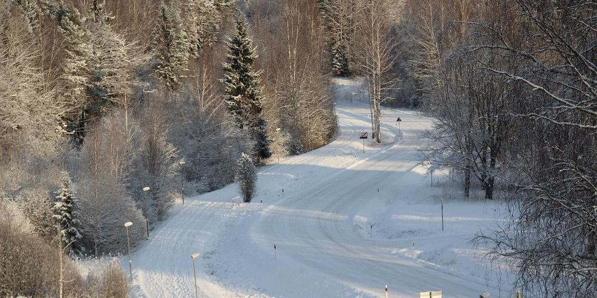

Eesti suusarajad
Valgustatud suusarajad
Harjumaa: 18
Karulaugu
Tädu
Pirita
Pae park
Merimetsa
Õismäe
Järve
Nõmme-Harku
Keila
Saue Sarapiku
Saku
Jüri
Aruküla
Padise
Vasalemma
Alema
Aegviidu
Loksa
Lääne-Virumaa: 8
Presidendirada
Rakke
Tamsalu
Ebavere
Kadrina
Rakvere Palermo
Sõmeru
Mõedaku
Valgamaa: 6
Tõrva
Valga
Lüllemäe
Kääriku
Tehvandi
Lüllemäe
Ida-Virumaa: 5
Kiviõli
Mäetaguse
Lisaku
Alutaguse
Narva Pähklimäe
Järvamaa: 5
Käru
Türi Tolli metsa
Koeru
Aravete
Valgehobusemäe
Pärnumaa: 5
Pärnu-Jaagupi
Vändra
Tõstamaa
Valgeranna
Sindi
Tartumaa: 5
Tartumaa
Vooremäe
Tähtvere
Lähte
Pala
Jõgevamaa: 4
Põltsamaa
Jõgeva
Kuremaa
Avinurme
Võrumaa: 4
Antsla
Võru-Kubija
Haanja
Värska
Põlvamaa: 3
Saverna
Mammaste
Intsikurmu
Saaremaa: 3
Kärla
Kudijape-Upa
Kuressaare
Viljandimaa: 3
Abja-Paluoja
Karksi-Nuia
Viljandi
Läänemaa: 2
Haapsalu Paralepa
Palivere
Raplamaa: 2
Rapla Vesiroosi
Paluküla
Hiiumaa: 1
Paluküla
Täpsem info
järgnevalt veebilehelt